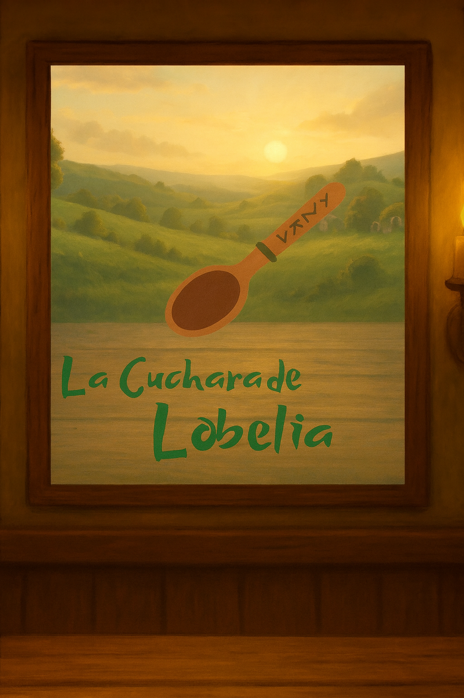

<!DOCTYPE html>
<html lang="es">
<head>
  <!--
    CHECKLIST 9 PASOS (registro de edición)
    1) LEER código actual ✓  2) ENTENDER comportamiento ✓
    3) RECORDAR pedido: mostrar Inicio.* y evitar rutas mal resueltas ✓
    4) PLAN: cambio mínimo → rutas relativas con ./, preload y mantener <picture>
      <source srcset="./Inicio.webp" type="image/webp" />
      <source srcset="./Inicio.jpg" type="image/jpeg" />
      
    </picture>

    <!-- Capa preparada para futuros botones (oculta por defecto) -->
    <div class="ui-overlay" aria-hidden="true">
      <div></div>
      <div class="button-bar">
        <!-- Ejemplo de botón (comentar/activar cuando lo necesitemos)
        <button class="btn" onclick="location.href='app.html'">Entrar</button>
        -->
      </div>
    </div>
  </main>

  <script>
    // Ajustes menores de viewport en iOS para evitar saltos por barras del navegador
    const fixVH = () => {
      document.documentElement.style.setProperty('--vh', window.innerHeight * 0.01 + 'px');
    };
    fixVH();
    addEventListener('resize', fixVH);
  </script>
</body>
</html>
